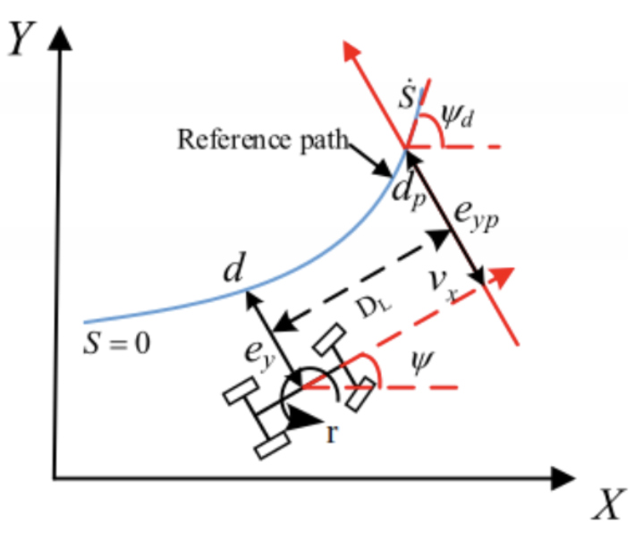

Jun. 2022 - Dec. 2022
Researched modelling methods for soft continuum robots including Cosserat Rod Theory, Piecewise Constant Curvature Approximation and FEM methods. Developed code to simulate:
(a) the soft robot inverted pendulum hinged at the start point using Cosserat Rod Theory (PyElastica software)
(b) series of 3 fixed end soft robot segments.
Implemented PD Joint-Space Control for controlling curvature of fixed end 3-segment soft pneumatic robot in horizontal plane.
Derived the dynamics and Adaptive Stiffness Impedance Control algorithm for the ankle rehabilitation robot in the existing IEEE journal paper. Implemented the control algorithm in Python using scipy odeint to best reproduce the results in the journal paper. Improved the control algorithm by modifying the Cost Function and adding Force-Feedback.
Derived the SMC (Sliding Mode Control), Integral SMC (ISMC), Super Twisting Algorithm (STA) controls algorithms and their finite-time convergence in the existing IEEE journal paper. Implemented the control algorithm in MATLAB to best reproduce the results in the journal paper.

Derived equations of motion and linearized the non-linear system using Jacobian linearization to obtain state-space equation. Checked controllability and implemented LQR control algorithm in MATLAB for the linearized and original nonlinear system. Checked observability of the system for various choice of output vectors and obtained best Luenberger Observer by pole placement. Plotted response of linearized and original nonlinear systems to initial conditions and unit step input for observable choices of output vector. Implemented LQG for linearized and original nonlinear system in MATLAB for smallest observable output vector. Plotted the initial response and unit step response of the systems.

Derived and Understood the mechanics/dynamics equations, the controls algorithm and the cost function in the existing IEEE journal paper. Implemented the control algorithm in MATLAB to best reproduce the results in the paper. Tuned some weight and constraint parameters to make the results match the ones given in paper.